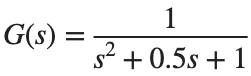
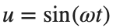
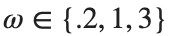
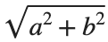
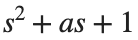
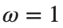
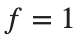
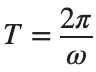

Frequency Response
실행 조건
MATLAB · Control System Toolbox
학습 목표
주파수마다 입력의 진폭과 위상이 어떻게 변하는지 알면 Bode plot을 실제 신호와 연결할 수 있습니다.
정현파로 이득·위상 측정
시작 조건

,
,
rad/s. s, s입니다.진행 방법
- lsim으로 출력을 계산하고 마지막 두 주기만 골라 입력과 출력을 그리세요.
- 출력을 에 최소제곱 적합해 이득

와 위상 를 구하세요. - squeeze(freqresp(G,omega))의 복소 응답에서 abs와 angle로 구한 이득·위상과 비교하세요. angle은 radian을 반환합니다. 표의 위상은 두 계산 모두 degree로 변환하세요.
남길 결과
- 주파수 3행 표와 마지막 두 주기의 비교 그림 3개.
s=tf('s'); G=1/(s^2+.5*s+1); omega=1; t=(0:.01:199.99)'; u=sin(omega*t);
y=lsim(G,u,t); keep=t>=t(end)-4*pi/omega;
% TODO: keep 구간의 a,b를 적합하고 Gain·Phase를 구하세요.
결과 기록·자가 점검
ω [rad/s] | |
측정 이득 | |
계산 이득 | |
측정 위상 [deg] | |
계산 위상 [deg] |
확인할 점
- Transient가 남은 앞 구간을 제외했는가?
- 위상 단위와 360° 주기 차이를 맞춘 뒤 오차를 비교했는가?
Damping과 공진 비교
시작 조건
분모를

로 두고 을 비교합니다. ω는 logspace(-2,2,400)입니다.진행 방법
- 세 모델의 이득·위상을 같은 주파수축에 그리세요.
- 각 모델의 최대 이득과 그 주파수, DC Gain을 표로 적으세요.
- 최대 이득 부근의 정현파 한 조건을 골라 첫 활동의 방법으로 확인하세요.
남길 결과
- Bode 형태의 그림 1세트와 공진 비교 표.
s=tf('s'); omega=logspace(-2,2,400);
for a=[.2 .5 1]
response=squeeze(freqresp(1/(s^2+a*s+1),omega)); fprintf('a %.2g max magnitude %.9g\n',a,max(abs(response)));
end
% TODO: Phase와 Resonance Frequency 표를 완성하세요.
결과 기록·자가 점검
a | |
최대 이득 | |
최대 이득의 ω | |
DC Gain |
확인할 점
- dB와 선형 이득을 구분했는가?
- 모델 간 주파수 격자와 입력 크기를 동일하게 두었는가?
시간축에서 주파수 단위 확인
시작 조건

rad/s와
Hz를 구분합니다. 두 번째 입력은 입니다.진행 방법
- 두 입력의 주기를 먼저 적고 같은 G에서 응답을 계산하세요.
- 위상차를 시간 지연으로 읽은 값과 각도 값으로 읽은 값을 함께 적으세요.
- rad/s와 Hz를 섞었을 때 Bode plot에서 어떤 점을 잘못 읽게 되는지 설명하세요.
남길 결과
- 단위 비교 2행 표와 출력 그림.
s=tf('s'); G=1/(s^2+.5*s+1);
for w=[1 2*pi], fprintf('omega %.9g, period %.9g\n',w,2*pi/w); end
% TODO: 두 입력의 응답을 같은 시간축에서 비교하세요.
결과 기록·자가 점검
입력 | |
ω [rad/s] | |
주기 [s] | |
이득 | |
위상 [deg] |
확인할 점

관계를 사용했는가?- 진폭 변화와 주기 변화를 서로 다른 현상으로 기록했는가?